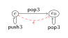

Jules Jacobs (Cornell)
Nate Foster (Cornell)
Tobias Kappé (Leiden)
Dexter Kozen (Cornell)
Lily Saada (Cornell)
Alexandra Silva (Cornell)
Jana Wagemaker (Radboud)
while(ttl > 0) {
if (dst == 10.0.0.101) {
vlan = 200
ttl = ttl - 1
switch = S4
}
...
}Network behavior = Program execution
NetKAT: Kleene algebra with tests for network verification
Fixed number of fields with fixed number of bits
StacKAT extends NetKAT with a stack to model variable-length payload data
| 0 | Drop packet (fail) |
| 1 | Forward packet (skip) |
| e₁ + e₂ | Non-deterministic choice |
| e₁ · e₂ | Sequential composition |
| e* | Kleene star (iteration) |
| f := n | Set field f to constant n |
| f == n | Test field f equals n |
| push(n) | Push constant n onto stack |
| pop(n) | Pop from stack, test if equals n |
Key insight: Stack operations enable modeling of variable-length data and unbounded state
if f==0 then p else q
f==0·p + f==1·q
|
while f==0 do p
(f==0·p)*·f==1
|
push(f)
f=0·push(0) +
f=1·push(1) + |
f := pop()
pop(0)·f:=0 +
pop(1)·f:=1 + |
A StacKAT program defines a relation between input and output packets
Each input packet is mapped to zero or more output packets
| Sequencing: | e₁ · e₂ = e₁ ∘ e₂ | Relation composition |
| Choice: | e₁ + e₂ = e₁ ∪ e₂ | Relation union |
| Kleene star: | e* = e* | Reflexive transitive closure |
| Field test: | f == n | Filter packets where field f equals n |
| Field update: | f := n | Set field f to value n |
| Push: | push(n) | Push constant n onto stack |
| Pop: | pop(n) | Pop and test equals n |
Is e₁ = e₂ ?
Do two programs have the same semantics?
Why? After push-pop cancellation, the net effect is either:
• Only pushes remain (if more pushes than pops)
• Only pops remain (if more pops than pushes)
• Nothing remains (if equal pushes and pops)
StacKAT Programpush(3)* · pop(3)*
|
→
Convert
|
|
|
Step 1
|
Push-pop closure
Add ε-transitions
|

|
|
Step 2
|
Pop-push filtering
Intersect with pop*push*
|
|
|
Step 3
|
Zipping
Normalized automaton
|
|
Idea: use small-step rules to generate finite automata
State is ⟨header fields, expression⟩ → finite state!
Stack handled via labeled transitions
Rule 1: Add epsilon shortcut when push(v) followed by pop(v)
Rule 2: Maintain transitive reflexive closure of ε edges
Intersect automaton with pop*push* language:
| → |
Run the automaton "middle-out",
synchronizing push and pop actions
|
Initial
|
After pop-push filtering
|
|
|
Step 1
|
Zip automaton
Pairs represent synchronized inside-out actions
|
|
|
Step 2
|
Add initial-stack self-loops
Final normalized automaton
|
|
push(v)⋅pop(v) ≡ 1
push(v)⋅pop(w) ≡ 0 (v ≠ w)
pop(v)⋅push(v) ≤ 1
push(v)⋅pop(v) ≡ 1
push(v)⋅pop(w) ≡ 0 (v ≠ w)
(ugly third axiom hidden)
Future work: are the ideal axioms complete?
StacKAT is a new model for unbounded packet processing with decidable equivalence
Goal: verification of real world large networks